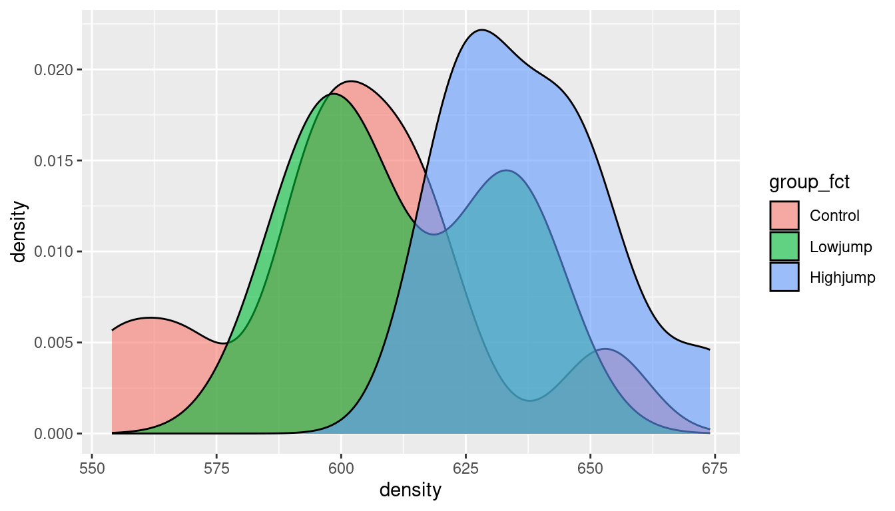

Installation instructions for the last three of these are below.
library(tidyverse)
── Attaching core tidyverse packages ──────────────────────── tidyverse 2.0.0 ──
✔ dplyr 1.1.2 ✔ readr 2.1.4
✔ forcats 1.0.0 ✔ stringr 1.5.0
✔ ggplot2 3.4.2 ✔ tibble 3.2.1
✔ lubridate 1.9.2 ✔ tidyr 1.3.0
✔ purrr 1.0.1
── Conflicts ────────────────────────────────────────── tidyverse_conflicts() ──
✖ dplyr::filter() masks stats::filter()
✖ dplyr::lag() masks stats::lag()
ℹ Use the conflicted package (<http://conflicted.r-lib.org/>) to force all conflicts to become errors
library(cmdstanr)
This is cmdstanr version 0.5.3
- CmdStanR documentation and vignettes: mc-stan.org/cmdstanr
- CmdStan path: /home/ken/.cmdstan/cmdstan-2.32.2
- CmdStan version: 2.32.2
library(posterior)
This is posterior version 1.4.1
Attaching package: 'posterior'
The following objects are masked from 'package:stats':
mad, sd, var
The following objects are masked from 'package:base':
%in%, match
library(bayesplot)
This is bayesplot version 1.10.0
- Online documentation and vignettes at mc-stan.org/bayesplot
- bayesplot theme set to bayesplot::theme_default()
* Does _not_ affect other ggplot2 plots
* See ?bayesplot_theme_set for details on theme setting
Attaching package: 'bayesplot'
The following object is masked from 'package:posterior':
rhat
Suppose we believe that these come from a Poisson distribution with a mean \(\lambda\) that we want to estimate.
We need a prior distribution for \(\lambda\). I will (for some reason) take a \(Weibull\) distribution with parameters 1.1 and 6, that has quartiles 2 and 6. Normally this would come from your knowledge of the data-generating process.
The Poisson likelihood can be written down (see over).
Some algebra
We have \(n=8\) observations \(x_i\), so the Poisson likelihood is proportional to
then you write the Weibull prior density (as a function of \(\lambda\)):
\[ C (\lambda/6)^{0.1} e^{-(\lambda/6)^{1.1}} \] where \(C\) is a constant.
and then you multiply these together and try to recognize the distributional form. Only, here you can’t. The powers 0.1 and 1.1 get in the way.
Sampling from the posterior distribution
Wouldn’t it be nice if we could just sample from the posterior distribution? Then we would be able to compute it as accurately as we want.
Metropolis and Hastings: devise a Markov chain (C62) whose limiting distribution is the posterior you want, and then sample from that Markov chain (easy), allowing enough time to get close enough to the limiting distribution.
Stan: uses a modern variant that is more efficient (called Hamiltonian Monte Carlo), implemented in R packages cmdstanr.
Write Stan code in a file, compile it and sample from it.
Components of Stan code: the model
model {
// likelihood
x ~ poisson(lambda);
}
This is how you say “\(X\) has a Poisson distribution with mean \(\lambda\)”. Note that lines of Stan code have semicolons on the end.
Components of Stan code: the prior distribution
model {
// prior
lambda ~ weibull(1.1, 6);
// likelihood
x ~ poisson(lambda);
}
Components of Stan code: data and parameters
first in the Stan code:
data {
int x[8];
}
parameters {
real<lower=0> lambda;
}
Compile and sample from the model 1/2
compile
poisson1 <-cmdstan_model("poisson1.stan")
poisson1
// Estimating Poisson mean
data {
int x[8];
}
parameters {
real<lower=0> lambda;
}
model {
// prior
lambda ~ weibull(1.1, 6);
// likelihood
x ~ poisson(lambda);
}
Another use for the actual sampled values is to see what kind of response values we might get in the future. This should look something like our data. For a Poisson distribution, the response values are integers:
poisson2_draws %>%rowwise() %>%mutate(xsim =rpois(1, lambda)) -> d
# A tibble: 30 × 2
group density
<chr> <dbl>
1 Control 611
2 Control 621
3 Control 614
4 Control 593
5 Control 593
6 Control 653
7 Control 600
8 Control 554
9 Control 603
10 Control 569
# ℹ 20 more rows
Our aims here
Estimate the mean bone density of all rats under each of the experimental conditions
Model: given the group means, each observation normally distributed with common variance \(\sigma^2\)
Three parameters to estimate, plus the common variance.
Obtain posterior distributions for the group means.
Ask whether the posterior distributions of these means are sufficiently different.
Numbering the groups
Stan doesn’t handle categorical variables (everything is real or int).
# A tibble: 30 × 4
group density group_fct group_no
<chr> <dbl> <fct> <int>
1 Control 611 Control 1
2 Control 621 Control 1
3 Control 614 Control 1
4 Control 593 Control 1
5 Control 593 Control 1
6 Control 653 Control 1
7 Control 600 Control 1
8 Control 554 Control 1
9 Control 603 Control 1
10 Control 569 Control 1
# ℹ 20 more rows
Plotting the data 1/2
Most obviously, boxplots:
ggplot(rats, aes(x = group_fct, y = density)) +geom_boxplot()
Plotting the data 2/2
Another way: density plot (smoothed out histogram); can distinguish groups by colours:
ggplot(rats, aes(x = density, fill = group_fct)) +geom_density(alpha =0.6)

The procedure
For each observation, find out which (numeric) group it belongs to,
then model it as having a normal distribution with that group’s mean and the common variance.
Stan does for loops.
The model part
Suppose we have n_obs observations:
model {
// likelihood
for (i in 1:n_obs) {
g = group_no[i];
density[i] ~ normal(mu[g], sigma);
}
}
The variables here
n_obs is data.
g is a temporary integer variable only used here
i is only used in the loop (integer) and does not need to be declared
density is data, a real vector of length n_obs
mu is a parameter, a real vector of length 3 (3 groups)
sigma is a real parameter
mu and sigma need prior distributions:
for mu, each component independently normal with mean 600 and SD 50 (my guess at how big and variable they will be)
for sigma, chi-squared with 50 df (my guess at typical amount of variability from obs to obs)
Complete the model section:
model {
int g;
// priors
mu ~ normal(600, 50);
sigma ~ chi_square(50);
// likelihood
for (i in 1:n_obs) {
g = group_no[i];
density[i] ~ normal(mu[g], sigma);
}
}
Parameters
The elements of mu, one per group, and also sigma, scalar, lower limit zero:
parameters {
real mu[n_group];
real<lower=0> sigma;
}
Declare sigma to have lower limit zero here, so that the sampling runs smoothly.
declare n_group in data section
Data
Everything else:
data {
int n_obs;
int n_group;
real density[n_obs];
int<lower=1, upper=n_group> group_no[n_obs];
}
Compile
Arrange these in order data, parameters, model in file anova.stan, then:
The posterior 95% intervals for control (group 1) and highjump (group 3) do not quite overlap, suggesting that these exercise groups really are different.
Bayesian approach does not normally do tests: look at posterior distributions and decide whether they are different enough to be worth treating as different.


Comments